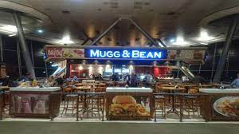
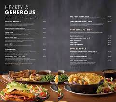

SMUGG & BEAN
ALWAYS GIVING YOU MORE AND MORE

Mugg & Bean is a place where customers become regulars and regulars become friends. We are your home away from home, the place where you’ll always get more and more.
This is the essence of Mugg & Bean. This is what you can expect. You taste it in our seasonally inspired menus, generous portions and bottomless drinks. You experience it through our easily accessible restaurants, located countrywide, and our welcoming and friendly service.
Our coffee credentials only feature the best coffees from around the world, sourced and prepared by our experts and our cakes are freshly baked, made from scratch and enjoyed in generous slices.
Our menu ranges from trusted classics to innovative dishes inspired by world food trends. So whatever you’re in the mood for, an old favourite or something different, you’re sure to find it here.
With the Generosity App you’re sure to get even more out of every visit. By scanning your bill you’ll earn Bean Rewards, which you can spend on your favourites. Pay through the App with your links card as well as send gift vouchers to friends & family.
What is certain is that at Mugg & Bean you’ll always enjoy the taste of more & more.
Mugg & Bean is a full-service, & On-The-Move restaurant, coffee-themed franchise restaurant chain originating from South Africa. The restaurant chain was founded in 1996 by Ben Filmalter after a visit to a Chicago coffee shop in the early 1990s inspired him to open a similar restaurant in South Africa.[1] The first restaurant was opened at the V&A Waterfront in Cape Town in 1996. The franchise was bought by Famous Brands in 2009. As of 2015 they had 184 outlets throughout South Africa and the rest of Africa, as well as a number of overseas operations, including the United Arab Emirates and Kuwait
